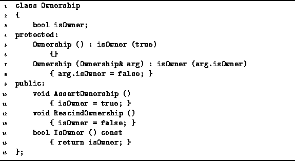

Data Structures and Algorithms
with Object-Oriented Design Patterns in C++
Data Structures and Algorithms
with Object-Oriented Design Patterns in C++A matter that is closely related to the containment of objects is the ownership of objects. Ownership is important because it is the owner of an object that ensures that the object's destructor is called and that any storage dynamically allocated for the object is freed when the object is no longer needed.
The ownership of contained objects is clear when direct containment is used. Since the container makes a copy of any object put into the container, it is the container that is responsible for deleting the copy when it is longer needed. In particular, the destructor for the container would normally delete all contained objects.
Unfortunately, the issue of ownership is not as clear when indirect containment is used. Indirect containment means that when an object is put into a container, it is a pointer to that object which is recorded in the container. This implies that the object was initially created outside of the container. The question then becomes, should the container delete the object when the time comes to clean up or should the deletion be done by outside of the container?
If we assume that it is the responsibility of the container to delete the contained objects, then we must make sure that the only objects put into a container are objects whose storage was dynamically allocated. This is because as the owner of the object, the container must delete the object when the time comes to clean up. But, given a pointer to an object, it is not possible for the container to know whether the object it points to has been dynamically allocated or whether it is actually a statically allocated global variable or a stack allocated local variable.
Another consequence of assigning the ownership of objects to a container is that things become complicated when an object is put into two or more different containers as well as when a given object is put into the same container more than once. The problem is that an object inserted in more than one container has more than one owner. In order to ensure that the object is only deleted once, we would have to extract the pointer from all but one of the containers before deleting them.
On the other hand, if we assume that it is not the responsibility of the of the container to delete contained objects, then the responsibility to clean up falls on the user of the container. In order to ensure that all contained objects are properly deleted, it is necessary to extract all of the contained objects from a container before deleting the container itself.
The solution to this dilemma is to support both paradigms.
I.e., make it possible for the user of a container
to specify whether that container is to be the owner of its objects.
The Ownership class given
in Program  does precisely that.
does precisely that.

Program: Ownership Class Definition
The Ownership class encapsulates a single Boolean variable, isOwner, which records whether the container is the owner of the contained objects. By default, the isOwner field is set to true in the constructor. Two member functions, AssertOwnership and RescindOwnership, provide a means for the user of a container to change the state of the isOwner datum. The IsOwner accessor reveals the current ownership status.
The behavior of the copy constructor is subtle: It transfers ownership status from the original container to the copy. This behavior is useful because it simplifies the task of returning a container as the result of a function.
In its declaration in Program
we saw that the Container class was derived both
from the Object base class and
from the Ownership class.
Therefore, all containers have ownership associated with them.
The following code fragment gives the design framework for the implementation of the Purge member function in some concrete class, say SomeContainer, which is derived from the abstract base class Container:
void SomeContainer::Purge ()The container calls its own IsOwner member function to determine whether it is the owner of its contained objects. Then, and only if it is the owner, the contained objects are deleted. Given the Purge function, the implementation of the destructor is trivial:if (IsOwner ())
for each Object i in this container
delete &i;
Now clean up the container itself.
SomeContainer::~SomeContainer ()
{ Purge (); }
 Copyright © 1997 by Bruno R. Preiss, P.Eng. All rights reserved.
Copyright © 1997 by Bruno R. Preiss, P.Eng. All rights reserved.